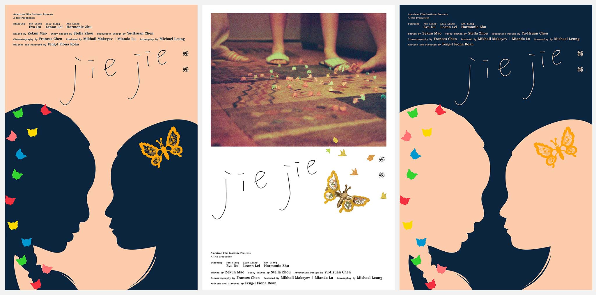
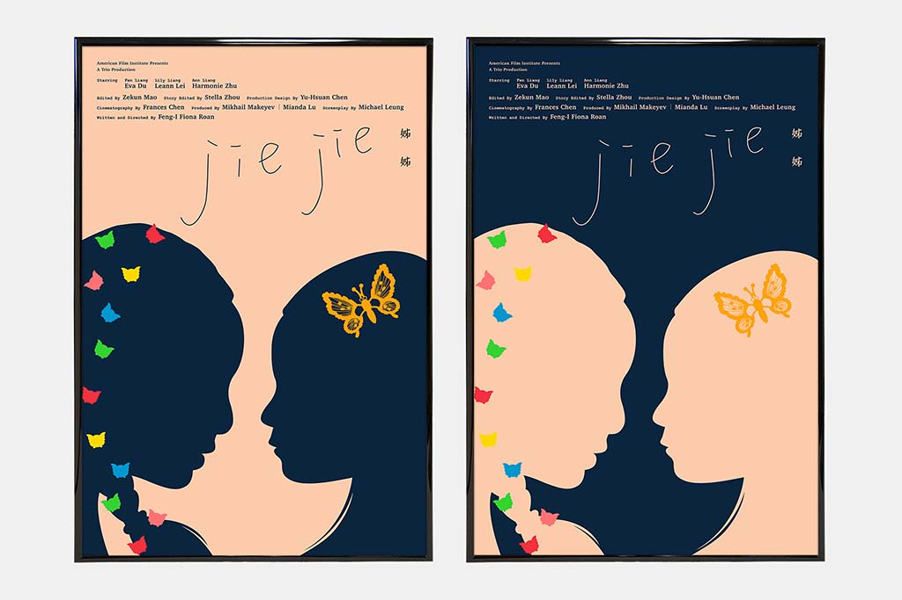
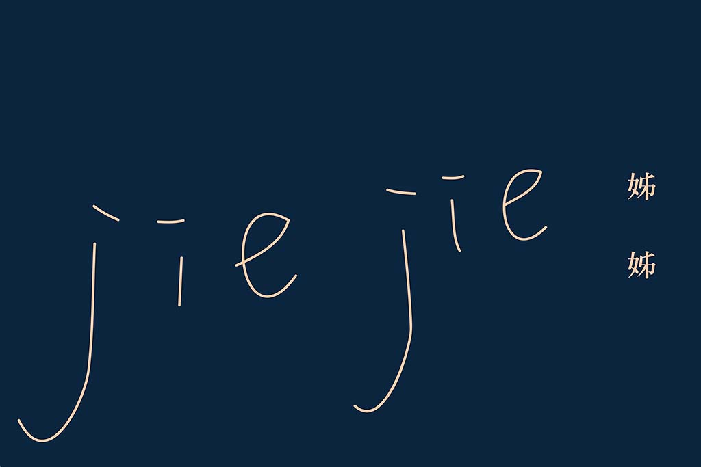
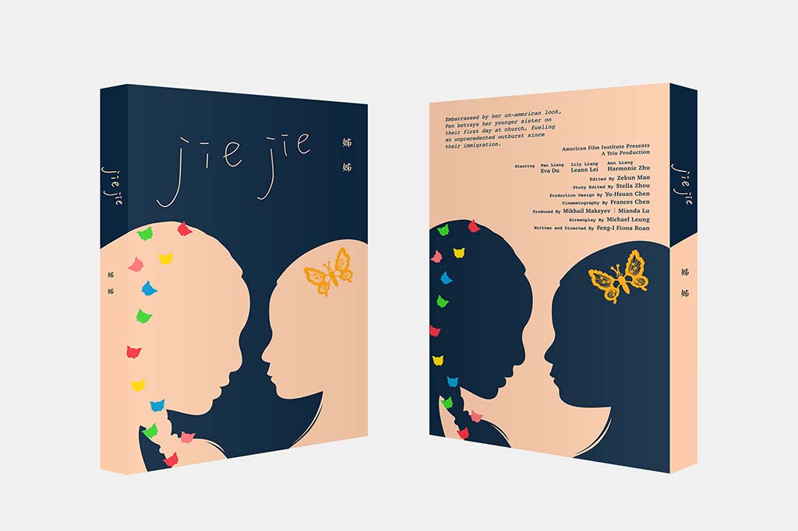
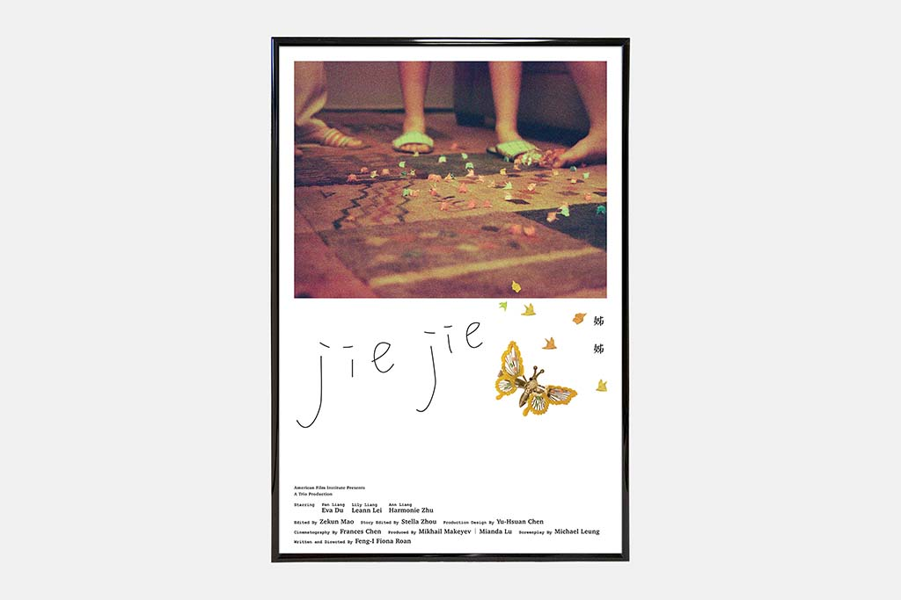

JIE JIE
梁
芬
標題｜JIE JIE 姊姊
類別｜電影海報、藍光光碟盒封面
電影海報規格｜(寬) 27" (長) 40"
藍光光碟盒封面規格｜(寬) 13 公分 (長) 15 公分
・
劇照攝影｜Ai Chung
設計｜反覆分心 Placebo Studio
客戶｜阮鳳儀 Feng-i Fiona Roan
・
年份｜2017
反覆分心與新銳導演阮鳳儀 Feng-i Fiona Roan 合作，為她的新作〈Jie Jie 梁芬〉設計電影海報與藍光 DVD 包裝。
故事取材自導演自身回憶，主要講述一對華人姊妹剛移民到美國時的生活插曲，透過鏡頭細膩地描繪出亟欲融入新環境的尷尬不安，以及姊妹間時而親密時而負擔的微妙關係。
由於與導演年齡相近，作品中那早已不復存在的90年代懷舊感，喚醒了我們許多童年時的記憶，也啟發我們對於電影海報有更多不同的想像。
我們為〈Jie Jie 梁芬〉的海報設計以剪影的方式，傳遞出姊妹間又像影子又似鏡子的關係，既是如此相似卻又如同對比的對視，與電影中的情節相呼應。



